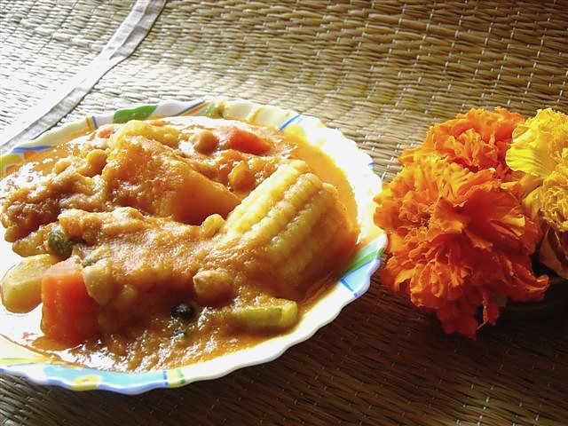

Allergens: none of the ten listed below
Ingredients
Quantities for 6.
- 1/2 cup, rinsed Toor Dal
- 200g, in 3cm cubes Pumpkin
- 150g, peeled and cubed Yam
- 1, peeled and thickly sliced Raw Banana
- 1 medium, cubed Sweet Potato
- 2, in 5cm lengths Drumstick
- 100g, in 3cm pieces French Beans
- 150g, peeled and halved Colocasiaboil separately first if the variety is itchyoptional
- 1.5 cups fresh grated Coconut
- 6 Dried Red Chilli
- 1 tbsp Coriander Powderoptional
- 8 crushed Black Pepperstanding in for teppal, the Goan Sichuan pepper, which is hard to source
- small ball, soaked Tamarind
- 2 tbsp, grated Jaggery
- 1 tbsp Coconut Oiloptional
- to taste Salt
- 700ml Water
Cookware
stovetop, blender
Checked against the ingredient list for ten allergens: milk, egg, fish, crustaceans, tree nuts, peanuts, sesame, mustard, soy and gluten. Brands vary, so read the label on anything new to you.
Before you start
- Cut the vegetables large and roughly equal, about 3cm. Khatkhate is a chunky stew and small dice disappears into it.
- Add the vegetables in order of hardness (yam and colocasia first, beans and pumpkin last) or half of them collapse.
- If you can find teppal (triphal), use 6 berries crushed instead of the pepper and add them in the last two minutes.
Method
- Boil the toor dal in 400ml water for 20 minutes, until soft enough to crush against the side of the pot.
- Meanwhile grind the coconut, dried chillies and coriander powder with 150ml water to a coarse-ish paste. A little texture is right here.Do not grind this one glass-smooth. Khatkhate should feel like coconut, not like sauce.
- Add the yam, colocasia and raw banana to the dal with the rest of the water and 1 tsp salt. Simmer 10 minutes.
- Add the sweet potato and drumstick and simmer 6 minutes.
- Add the pumpkin and french beans and cook 5 minutes, until everything yields to a knife but still holds its shape.Test the pumpkin first. It goes from firm to mush in about ninety seconds.
- Stir in the ground coconut paste, the tamarind extract and the jaggery.
- Simmer gently 8 minutes, stirring only occasionally so the pieces stay whole.
- Crush in the pepper, check the salt, and take it off the heat. It should be sweet, sour and mildly hot in that order.
- Trickle over the raw coconut oil just before serving with rice.Raw, not heated. That last spoonful of coconut oil is the signature of a Saraswat kitchen.
Storage
Keeps 2 days refrigerated. Reheat gently over low heat with a splash of water; do not boil, as coconut gravies split and the vegetables break down.
Nutrition Medium estimate
Low protein: 7 g a serving, 9% of the calories
| Per serving314 g | Per 100 g | |
|---|---|---|
| Calories | 318 kcal | 102 kcal |
| Protein | 6.9 g | 2 g |
| Carbohydrate | 55.3 g | 18 g |
| of which sugars | 16.7 g | 5 g |
| Fibre | 8.9 g | 3 g |
| Fat | 9.7 g | 3 g |
| of which saturated | 7.9 g | 2 g |
| of which unsaturated | 0.9 g | 0 g |
Ingredients given to taste count as zero, so the real figures run a little higher. Nearest database match used for jaggery. Estimated from raw ingredients using USDA FoodData Central.
More like this: Vegan Indian recipes · Vegetarian Indian recipes · Gluten-free Indian recipes · Dairy-free Indian recipes · No onion no garlic recipes · Goan recipes
Times, yields, allergens and nutrition are guidance. Use your own judgement on doneness and on storing. More in About.